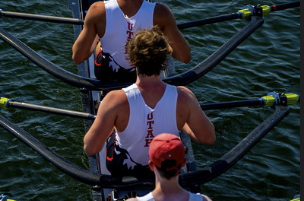
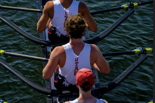

How I Started
My brother
My brother was one of my biggest helps when joining rowing. It's not only a hard sport but also can be repetitive at times and my brother helped me get through both those things and the thoughts of quitting. He was a big inspiration and a big reason why I am still on the team.
Biggest Accomplishment
- I made it to nationals in 2024 and placed 9th in the nation.

Biggest Accomplishment
- I made it to nationals in 2024 and placed 9th in the nation.

- I made it to nationals in 2024 and placed 9th in the nation.
Tagg Perreca
My Team History of Rowing
Rowing originated in ancient Egypt, Greece, and Rome, where it was primarily used for transportation and military purposes. It later became a competitive sport in 18th-century England. The sport gained prominence through college competitions and eventually the Olympics in 1900.